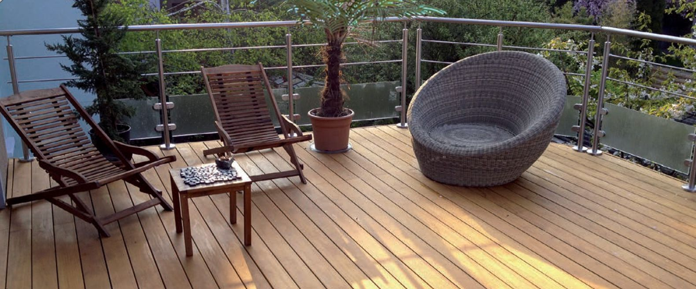
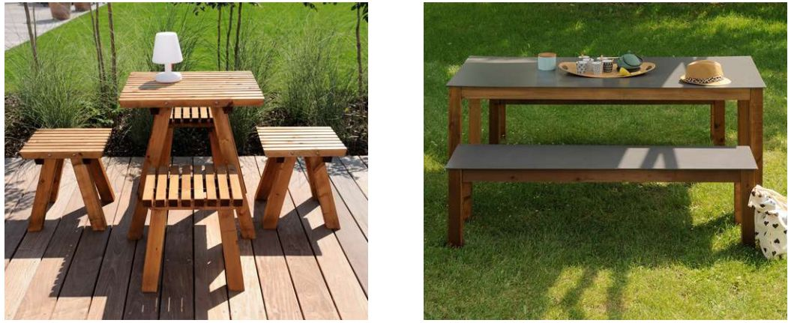
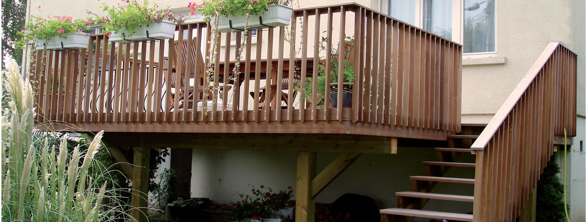
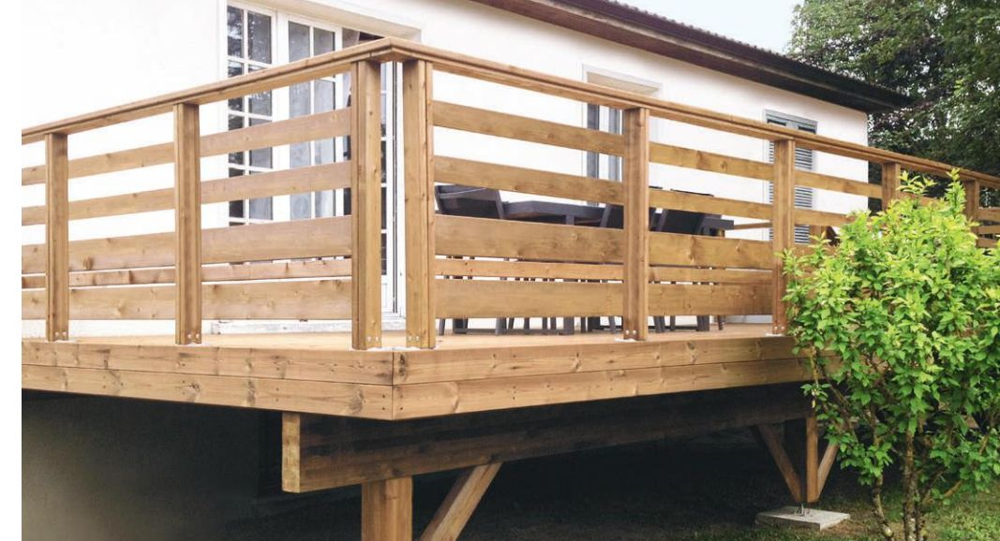
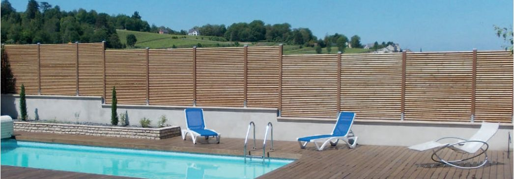
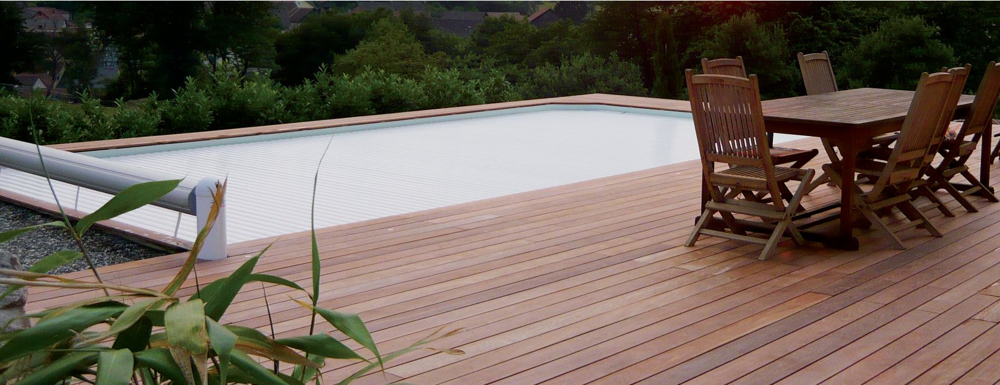

LES AMÉNAGEMENTS D’ESPACE
S’il y a bien des détails qu’il ne faut pas négliger, ce sont bien
ceux qui constituent votre extérieur. Des bacs à plantes aux carrés
potagers, des mobiliers de jardin à la cabane pour enfants, nos
collections apporteront à la fois une ambiance chaleureuse et un
cadre moderne.

LES ESCALIERS
Véritable lieu de passage, l’escalier grad a été pensé pour vous
simplifier la vie. À lui seul, il satisfait toutes les attentes que vous
pourriez avoir : robustesse, stabilité et élégance. Sa surface rainurée
lui confère une adhérence à toute épreuve.
Adaptable en longueur et en largeur, il vous offrira un confort de
déplacement très appréciable au quotidien.

LES GARDE-CORPS
Allier la sécurité et l’esthétique, tel est le défi que nous avons relevé
et que nous vous proposons de découvrir à travers notre vaste choix
de garde-corps.
Du classique au contemporain, avec des barres ou des câbles,
en bois, Inox, verre ou panneaux, vous trouverez forcément votre
bonheur parmi nos propositions sur mesure.

LES PALISSADES
Pour disposer de votre terrasse, à l’abri des regards indiscrets ou du
vent, nous vous proposons un vaste choix de palissades en bois.
Ces dernières pourront également être utilisées pour délimiter votre
parcelle.
Nos différents modèles sauront vous séduire par leur allure et leur
solidité qui seront préservées au fil du temps.

LES PLANCHERS (TERRASSES BOIS)
À la pointe de la technologie en matière de préservation du bois,
les planchers grad ont été pensés pour satisfaire vos envies.
Dotés d’un système de pose breveté, d’une fixation invisible
et démontable, ils s’adaptent aux particularités de votre terrasse.
Issus de forêts bien gérées, nos matériaux sont sélectionnés pour
vous garantir des terrasses de qualité : imputrescibles, stables
et pérennes.
